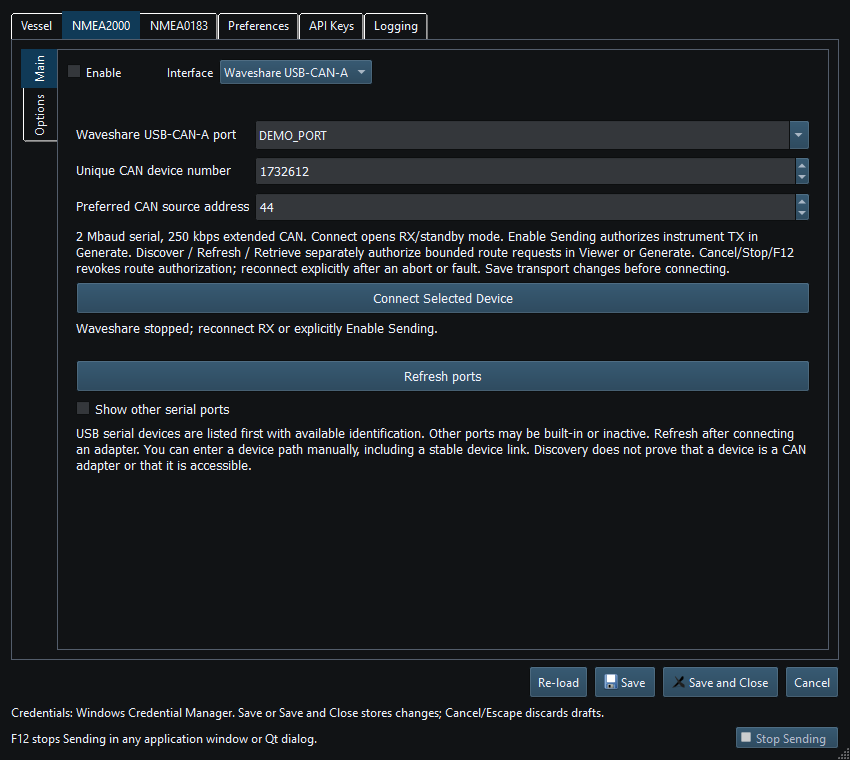

Waveshare USB-CAN-A connects the supported serial USB-CAN adapter on Windows and Linux. Select this protocol only for compatible USB-CAN-A hardware.
Use 2,000,000 baud serial and 250 kbit/s extended CAN. Receive/standby uses the established mode 02; mode 00 requires explicit instrument Sending or separately authorized route requests. The application paces outgoing frames automatically.
Follow the adapter wiring documentation for CAN H/L/reference, power and termination. A USB serial connection alone does not establish CAN communication. Check the backbone and traffic if the port opens but no messages arrive.
On Ubuntu, access-denied/busy errors may reflect serial permissions or another process owning the port. Use administrator-approved permission/group recovery and a fresh session where needed; do not modify drivers or udev rules merely because the dropdown was empty. Saved/manual paths remain usable when discovery cannot identify the device.
Connection opens RX/standby, not automatic instrument TX. Enable Sending applies only in Generate with supported instruments. Discover/Refresh/Retrieve separately authorize bounded route requests; Cancel/Stop/F12 revokes that permission. Save changed transport settings before reconnecting, and reconnect explicitly after an abort/fault as status requires.
For chartplotter routes, check service compatibility and use the route dialog. A bidirectional adapter alone does not provide a compatible route service.

Figure 69. Waveshare USB-CAN-A port and device identity settings in Setup. Click to enlarge.
NMEA2000 Overview · NMEA0183 Overview · Network NMEA2000 · SocketCAN · CANable SLCAN · Actisense NGT-1 · Signal K · Device Discovery and Diagnostics · Connection Troubleshooting · Enable, Dispatch and Sending · Route Overview · Engineering Units